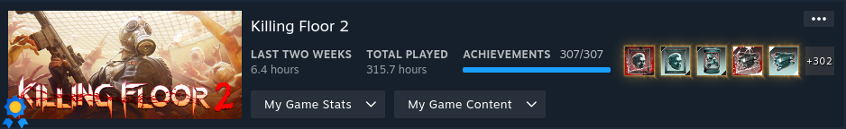

Why Killing Floor 2?
I was once an active member of the Tripwire forums, the hub for all things Killing Floor. I recall the developers stating that a sequel to Killing Floor was off the table, as they felt they could incorporate any new features into the existing game. However, it seems they had a change of heart, as the announcement for Killing Floor 2 came as a complete surprise. Whenever you'd boot up a game of Killing Floor, pre-alpha footage of Killing Floor 2 would play, and you can still see that footage in the original game today. To say I was excited would be an understatement. My friends and I were still deeply involved in Killing Floor at the time of the announcement, and we were all eager to dive into the new sequel. We had pushed the boundaries of what was possible in the original game, and it was clearly time for a fresh experience. For a more in-depth take, check out my review of Killing Floor.
Story
The game follows in the same setting and gameplay elements as the first Killing Floor game, so I'm going to skip the explanation there. If you want to know more about the story and general overview of the game, again, check out my Killing Floor review.
Gameplay Mechanics
Zeds
In any sequel, you're looking for new content, and Killing Floor 2 delivers on that front. When it comes to the zeds, all your old "friends" are back, along with some fresh faces and variations. The Clot, a staple enemy, now has three new forms. First, there's the Cyst, a weaker version of the original. Then comes the Alpha Clot, which will sometimes make a beeline for you. The Slasher is another new variant, always on the move and attacking quickly. And let's not forget the Rioter, an armored Alpha Clot that can boost other zeds' abilities. The Gorefast is back too, but now has a tougher sibling called the Gorefiend. The Gorefiend sports dual blades and a bigger health pool. The Crawler also makes a return, this time with an Elite version that goes out with a bang—literally, it explodes and leaves a poisonous cloud. Old favorites like the Bloat, Siren, Stalker, Husk, and Scrake are unchanged. The Fleshpound is still its old self, but now there's a mini-me called the Quarterpound. Instead of one big Fleshpound, you might face four Quarterpounds. They each have a quarter of the health and damage, but they'll try to overwhelm you with numbers. The game also introduces a brand-new enemy: the E.D.A.R. (Elite Defense & Assault Robot). Spawned by a new boss, the Matriarch, these robots come armed with lasers, missiles, and a lasso to keep you in place.
Bosses
Bosses deserve special attention in this review, especially since the game has expanded from one to five. The original boss, Hans, is often considered the toughest, although that's up for debate. Let's break down what you're up against with Hans. At long range, he'll use his dual guns to take potshots at you. If you're at medium range, watch out for his explosive and poison grenades that'll force you to relocate. Get too close, and he'll pounce, slashing at you with his metallic claws. Once you've whittled down his health a bit, he'll activate a shield and make a beeline for you. If he grabs you, he'll lock you in place and siphon off your health to replenish his own. However, if you manage to break his shield during this phase, you'll skip the health-draining part and stun him for a good while. Repeat this cycle three times, and Hans is history. The King Fleshpound and Abomination are essentially supersized versions of the Fleshpound and Bloat, respectively. Both of these bosses can summon mini-me's of themselves and have a ton of health and damage output. The Patriarch is back, and despite his claims, his bag of tricks hasn't changed. He's still got his minigun, missiles, cloaking tech, and that unsettling chest tentacle. Last but not least, we have the intriguingly named Matriarch. While the previous three bosses might feel a bit stale, the Matriarch is as engaging as Hans, in my view. Her abilities are all about electricity. She starts off with shields on three parts of her body. Break those, and she goes berserk, ramping up her speed and damage. She has a trio of attacks: a plasma stream, a bolt of lightning, and a close-range sonic pulse. When her health drops to a certain point, she calls in E.D.A.R. units for backup. At around half health, she borrows the Patriarch's cloaking ability and starts closing in for melee attacks and her sonic blast.
Perks
The combat in the original Killing Floor was fairly straightforward and had its share of balance issues. You'd level up, get some passive bonuses, and weapons would become cheaper. Beyond light and heavy attacks, or primary and secondary firing modes, there wasn't much variety. Killing Floor 2, however, shakes things up quite a bit. All the original classes are back, along with some new additions. The Berserker class, in particular, has been revamped. Now there's a parry system that lets you block most damage and stagger enemies. This is a big change from the first game, where some attacks could stun but there was no parry. This adds a layer of skill and balance, as you can't just stun-lock every enemy. Most of the old classes remain largely the same, with a few tweaks. For example, Field Medic's healing darts now home in on players, and each class gets its own unique grenade. As for the new classes, we have Gunslinger, SWAT, and Survivalist. Gunslinger specializes in dual-wielding pistols and was inspired by a mod from the original game. The class rewards you for landing consecutive headshots by increasing your damage. Now, about SWAT and Survivalist, I've got to be honest. I'm not really sure what their unique selling points are. Survivalist is supposed to be a jack-of-all-trades, but neither class seems particularly compelling. In my experience, they're rarely chosen in online play. Each perk now has skill choices that unlock every five levels, up to level 25. You get to pick between two different buffs. You level up by using weapons related to the perk you want to get experience for. Some choices are no-brainers, but others can genuinely impact how you play.
Audio & Video
Music was a standout feature in the original Killing Floor, setting the tone and atmosphere. Killing Floor 2 also aims for epic music, but it falls a bit short in my opinion. The CEO of Tripwire Interactive opted for a religious metal band instead of retaining zYnthetic, the audio designer from the first game. This decision wasn't well-received, at least among the people I spoke to. And let's be honest, the CEO hasn't exactly been a beacon of great decision-making. Before the game even launched, a mod was released to swap out the new soundtrack for the original Killing Floor music. I was one of those who downloaded this mod and never looked back, so I can't really speak to the quality of the in-game music. However, I've heard it's more subdued. If that's your thing, great, but I'd recommend giving the music replacement mod a try. In my view, the enemy sounds in Killing Floor 2 are a bit of a downgrade, despite being technically better. Sure, the audio is higher quality, but some of the charm and personality from the original game's voice lines are missing. Take the Siren, for example; in the first game, she'd say something like "Someone get me out of this jacket," referencing her metal straitjacket. It might just be nostalgia talking, but I also find the player characters less endearing this time around. The original game had a good dose of topical and political humour, which has been largely replaced by more generic lines in the sequel. I've never seen anyone else bring this up, so maybe I'm in the minority here. On the plus side, a lot of effort went into making the weapon sounds realistic. I'm not a gun aficionado, but from what I can tell, they did a good job. Even the fictional weapons sound like you'd expect them to.
When it comes to visuals, Killing Floor 2 is a clear upgrade in every way. You can see the painstaking effort that went into the gore mechanics. Overkill an enemy and they'll burst apart, splattering blood all over the place. The Husk, for instance, will explode upon death, taking out nearby enemies in a shower of gore. Dead zeds accumulate in bloody heaps, adding to the visceral atmosphere. The game even has distinct animations to signal when you should parry, a nice touch for Berserker players. The level design and set pieces are equally impressive, featuring a rich palette of vibrant colours. All in all, it's a massive improvement in the visual department, and I can't find any downsides.
Replayability
Killing Floor 2 presents an interesting contrast to its predecessor. While the original game could be a bit dull when played solo, Killing Floor 2 actually shines in single-player mode. The addition of more RPG-like perks and abilities means that playing with others doesn't necessarily enhance the experience. Perks don't interact much with each other, and each class is versatile enough to handle all types of enemies. This lack of specialization means there's less incentive for team diversity, making the game feel different and, as a side effect, easier.
Now, let's address the elephant in the room: microtransactions. I didn't engage much with this aspect, but it's the primary way to acquire most cosmetics. The system is similar to what you'd find in Valve games: you get crates and then have to purchase keys with real money to open them. It's the kind of monetization strategy that's widely disliked, but Tripwire implemented it so clumsily—and cosmetics are so inconsequential—that you can largely ignore it. There's also a crafting system where you can salvage unwanted drops, but I didn't bother with it. To me, it seems like a waste of time, money, and Steam inventory space. A more rewarding way to earn cosmetics is through the game's challenge system. Daily, weekly, and seasonal challenges offer "dosh," which can be used to open free crates. Completing weekly and seasonal challenges also grants you cosmetics tied to those specific time frames.
Additionally, the game has introduced a prestige system for perks. Prestiging doesn't offer any tangible benefits, just an emblem next to your class logo. You can prestige up to three times, and it's a more streamlined process compared to messing with game config files in the original Killing Floor, as was previously required.
Final Thoughts
Killing Floor 2 is undeniably the better game in many aspects, which is what you'd expect from a sequel. It's clear that a lot of time, effort, and thoughtfulness went into its development. That said, I still have a soft spot for the original, perhaps because there's a bit of a hipster in me. Once you've maxed out everything in Killing Floor 1, it's just as enjoyable in its own right. When compared side by side, Killing Floor 2 offers a lot of fun right up until you've ticked off all the boxes. Whether that's a pro or a con is up to individual preference. Personally, I appreciate games that have a clear end point rather than dragging on indefinitely. It stands as a fantastic modern game that you can enjoy either solo or with friends. With a variety of perks and achievements to chase, there's more than enough to keep you engaged.
Should you complete Killing Floor 2?
Killing Floor 2 is definitely more friendly to completionists compared to its predecessor. In my review of the original Killing Floor, I mentioned the grind of having to complete each map on all four difficulties. While I still recommended that game for those looking to complete it, the process could be quite tedious. Killing Floor 2 takes a smarter approach with its achievements. Each map comes with three basic achievements, which make up the majority of the game's achievements. You need to find a set number of collectibles, beat the map on the hardest difficulty, and simply complete the map. You can knock out all three in a single game, making these achievements far more accessible. But the developers didn't stop there; they added more achievements to keep things interesting. The variety in gameplay achievements complements an already diverse game quite well. I wholeheartedly recommend completing Killing Floor 2, whether you're going it alone, playing with friends, or mixing it up.
Stats Gallery
Complete!
